7. Monte Carlo Integration#
This chapter is adapted from AM207 (Harvard, Fall 2021). Watch the recorded lecture.
In this chapter
Basics of Monte Carlo Simulation
Variance Reduction: Control Variates
Variance Reduction: Stratified Sampling
Variance Reduction: Importance Sampling
Application: Monte Carlo Estimation of Arbitrary Integrals
7.1. Motivation#
Posterior samples allow us to approximately compute posterior point estimates, for example, we can approximate the posterior mean as
In fact, for any function \(f\) of \(\theta | Y\), we can estimate the expected value of \(f\) by first sampling \(S\) samples from the posterior \(p(\theta | Y)\) and then compute the average value of \(f\) on these samples:
Question: But is this estimate consistent? Unbiased? Of minimal variance?
7.2. Basics of Monte Carlo Integration#
Naive Monte Carlo Estimation of Integrals#
Let \(I\) denote the integral
and let \(\widehat{I}\) denote the approximation
We call \(\widehat{I}\) the Monte Carlo estimate of \(I\).
In general, Monte Carlo integration is the process of estimating a deterministic quantity (an integral) using a procedure involving stochasticity (sampling).
The Consistency and Unbiasedness of Monte Carlo Estimators#
Recall that the Strong Law of Large Numbers says that the sampling mean of \(S\) iid random variables converges to the theoretical mean, with probability 1, as \(S\to \infty\). This means that
with probability 1. Hence, the Monte Carlo Estimator \(\widehat{I}\) is consistent.
The expected value of \(\widehat{I}\) is
where \(\theta_s \sim p(\theta | Y)\). Hence, the Monte Carlo Estimator \(\widehat{I}\) is unbiased.
The Variance and Error of Monte Carlo Estimators#
The variance of \(\widehat{I}\) is given by
where \(\theta_S\), \(\theta \sim p(\theta|Y)\). Plainly put, the variance of the estimator is reduced when the number of samples \(S\) is large and the variance \(\sigma_f^2\) of \(f(\theta)\) is low.
The Central Limit Theorem says that the difference between sample mean and the theoretical mean of iid random variables will approach a normal distribution as \(N\to \infty\). For us, this means that the error of \(\widehat{I}\) has a roughly normal distribution:
Again, this says that, to reduce the error of \(\widehat{I}\) we can increase the number of samples \(S\) or decrease the variance \(\sigma_f^2\) of \(f(\theta)\).
7.3. Variance Reduction: Control Variates#
A Baseline for Variance of Monte Carlo Estimates#
The variance of the naive Monte Carlo estimate \(\widehat{I}\) is:
We’ll compare the variance of alternative estimator to the above when checking for variance reduction.
Note: The variance of \(f(\theta)\) depends on both the variance of \(\theta\) and the amount of variation in the function \(f\). Functions that change a great amount over the domain will have a high variance and functions that are flat will have a low variance.
The General Idea of Control Variates#
Based on our realization that “flat” functions have lower variance, we will try to engineer “flat” functions that allow use to compute the integral of \(f\).
Observation: For a given function \(f(X)\), if \(h\) is a function of \(X\) that correlates with \(f\), then \(f(X)-h(X)\) will have lower variance.

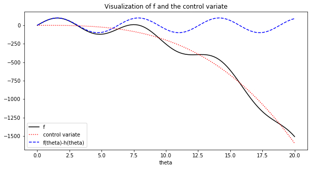
Variance of Control Variates#
Fix a function \(f(\theta)\), \(\theta\sim p(\theta|Y)\). Let \(h(\theta)\) be a function with known mean \(\mu_h = \mathbb{E}_{\theta|Y}[h(\theta)]\) and such that \(h(\theta)\) is correlated with \(f(\theta)\). We call \(h\) the control variate for \(f\).
We define the control variate Monte Carlo estimate of \(\mathbb{E}_{\theta|Y}[f(\theta)]\) to be
where \(\theta_s \sim p(\theta|Y)\), \(c\) is our choice of a constant.
The variance of this estimator is:
Thus, we see that when \(\mathbf{cov}[f(\theta), h(\theta)] \neq 0\) there is hope for variance reduction, i.e. \(\sigma_{\widehat{I}_{\text{control}}}^2 <\sigma_{f}^2/S\)!
Exercise: check that \(\widehat{I}_{\text{control}}\) is consistent and unbiased! Derive \(\sigma_{\widehat{I}_{\text{control}}}^2\)!
The Nitty Gritty of Control Variates#
Using control variate Monte Carlo requires that we:
choose a control variate \(h\) with known mean and who is correlated with \(f\).
choose a constant \(c\).
Typically, we want to choose an \(h\) that follows to the trends of \(f\) that is easy to integrate.
The value of \(c\) that minimizes \(\sigma_{\widehat{I}_{\text{control}}}^2\) is
In case \(\mathbf{cov}[f(\theta), h(\theta)]^2\) and \(\sigma_h^2\) are difficult to compute analytically, they can be empirically estimated from the samples.
When we choose the optimal \(c = c^*\), the variance of \(\widehat{I}_{\text{control}}\) is
where \(\rho_{f, h}\) is the correlation between the outputs of \(f\) and \(h\). Hence, the more \(h\) is correlated with the output the greater the variance reduction.
Example: Control Variates#
Let \(f(\theta) = -0.2 \theta^3 + 100\sin(\theta)\) for \(\theta|Y \sim U(0, 20)\). Let the control variate be \(h(\theta) = -0.2 \theta^3\). We aim to estimate:
We compare the sample variance of \(\widehat{I} = \frac{1}{S} \sum_{s=1}^S f(\theta_s)\) with that of the Monte Carlo estimate with the control variate:
for \(S = 100\) and where
x = np.linspace(0, 20, 100)
fig, ax = plt.subplots(1, 1, figsize=(10, 5))
ax.plot(x, f(x), color='black', label='f')
ax.plot(x, h(x),linestyle=':', color='red', label='control variate')
ax.plot(x, control_mc(x), linestyle='--', color='blue', label='control variate integrand')
ax.set_title('Visualization of f and control variate')
ax.set_xlabel('theta')
ax.legend(loc='best')
plt.show()
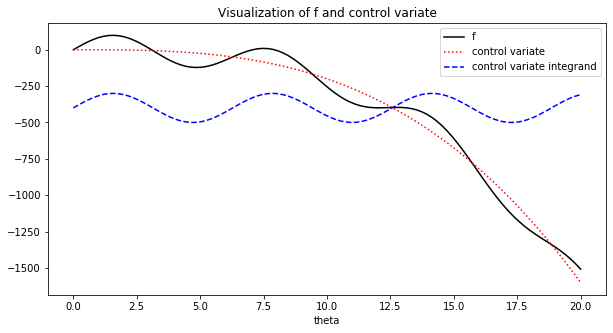
print('variance of monte carlo estimate:', mc_variance)
print('variance of control variate monte carlo estimate:', control_mc_variance)
variance of monte carlo estimate: 2177.441459671328
variance of control variate monte carlo estimate: 52.49658213225613
7.4. Variance Reduction: Stratified Sampling#
The General Idea of Stratified Sampling#
Again, based on our realization that “flat” functions have lower variance, we will try to partition the domain of \(f\) into regions where \(f\) is relatively “flat”. We estimate the integral on each piece of the partition then sum over the pieces.

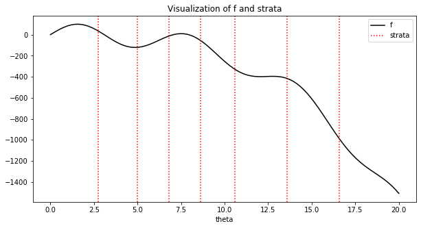
The Stratified Sampling Monte Carlo Estimator#
Fix a function \(f(\theta)\), where \(\theta\) is a random variable over the domain \(\Theta\) whose pdf is \(p(\theta|Y)\). Then the integral for \(\mathbb{E}_{\theta|Y}[f(\theta)]\) can be decomposed as
where \(\bigcup_{m=1}^M\Theta_m = \Theta\) and \(\Theta_m \cap \Theta_{m'} = \emptyset\) if \(m\neq m'\).
To make \(p(\theta)\) a pdf over \(\Theta_{m'}\) we need to normalize it, i.e.
We can then rewrite the integral for \(\mathbb{E}_{\theta|Y}[f(\theta)]\) again
where \(\mathbb{1}_{\Theta_m}\) is the indicator function for the set \(\Theta_m\).
Fix a total sample size \(S\). Let \(\widehat{I}_m\) be the Monte Carlo estimate of \(\mathbb{E}_{\theta \sim \frac{p(\theta)}{w_m}\mathbb{1}_{\Theta_m}}[f(\theta)]\) estimated with \(S_m = w_m * S\) samples, the stratified sampling Monte Carlo estimator is
since \(\mathrm{Var}\left[\widehat{I}_m\right]\) is lower than \(\mathrm{Var}\left[\widehat{I}\right]\), we hope that \(\mathrm{Var}\left[\widehat{I}_{\text{SS}}\right]\) is also lower.
Going deeper: The Nitty Gritty of Stratified Sampling: Variance Reduction
The stratified sampling Monte Carlo is unbiased. Note that
Since \(\widehat{I}_m\) is an unbiased estimator of \(\mathbb{E}_{\theta \sim \frac{p(\theta)}{w_m}\mathbb{1}_{\Theta_m}}[f(\theta) | \text{strata}=m]\), we have that
The variance of \(\widehat{I}_{\text{SS}}\) can be computed as
where \(\sigma_m\) is the variance of \(f(\theta)\) over \(\Theta_m\). Again, conditioning on selecting the \(m\)-th stratum, we can show that
with equality holding only when the strata have identical mean.
Example: Stratified Sampling#
Again, let \(f(\theta) = -0.2 \theta^3 + 100\sin(\theta)\) for \(\theta|Y \sim U(0, 20)\). We aim to estimate:
We compare the sample variance of \(\widehat{I} = \frac{1}{S} \sum_{s=1}^S f(\theta_s)\) with that of the Monte Carlo estimate with stratified sampling:
for sample sizes
where the number \(M\) of strata is 10, \(w_m = \frac{t_m - t_{m-1}}{20}\), and where the end points of the strata is given by
#define the end points of the strata
strata = [0, 2.75, 6.8, 8.6, 10.6, 13.6, 20.]
x = np.linspace(0, 20, 100)
fig, ax = plt.subplots(1, 1, figsize=(10, 5))
ax.plot(x, f(x), color='black', label='f')
for stratus in strata:
ax.axvline(x=stratus, linestyle=':', color='red')
ax.set_title('Visualization of f and strata')
ax.set_xlabel('theta')
ax.legend(loc='best')
plt.show()
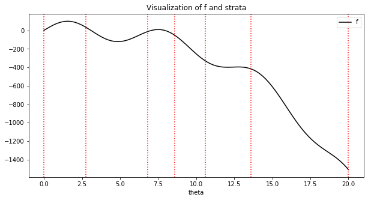
print('variance of monte carlo estimate:', mc_variance)
print('variance of stratified monte carlo estimate:', stratified_mc_variance)
variance of monte carlo estimate: 2131.79723836582
variance of stratified monte carlo estimate: 379.4187342386133
7.5. Variance Reduction: Importance Sampling#
The General Idea of Importance Sampling#
The idea behind importance sampling is very similar to that of rejection sampling: we tackle the problem where the posterior \(p(\theta|Y)\) is typically hard to sample from. Instead,
we approximate \(p(\theta|Y)\) with an easy distribution \(q(\theta)\) and sample \(\theta_1, \ldots, \theta_S\) from \(q\).
rather than rejecting some of the samples, we evaluate \(f\) on all the samples, and then weight \(f(\theta_s)\) based on how likely is \(\theta_s\) to be from \(p\) vs \(q\). That is, we estimate \(\mathbb{E}_{\theta|Y}[f(\theta)] \approx\frac{1}{S}\sum_{s=1}^S \frac{p(\theta_s|Y)}{q(\theta_s)}f(\theta_s)\), \(\theta_s \sim q(\theta)\). Why is this a good idea?

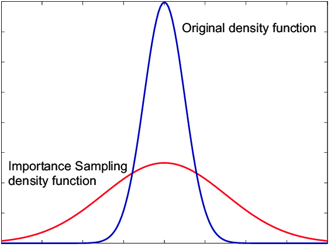
Variance of Importance Sampling#
Fix a total sample size \(S\). The importance sampling Monte Carlo estimator is
We call \(q\) is the importance distribution, \(p\) the nominal distribution and \(\frac{p(\theta_s|Y)}{q(\theta_s)}\) the importance weight.
We can show that \(\widehat{I}_{\text{IS}}\) is unbiased and consistent using the following fact (assuming \(q\) and \(p\) have the same support):
We can directly calculate the variance of \(\widehat{I}_{\text{IS}}\) to be \(\mathrm{Var}\left[\widehat{I}_{\text{IS}}\right] = \frac{\sigma^2_q}{S}\), where \(\sigma^2_q\) is the variance of \(\frac{p(\theta_s|Y)}{q(\theta_s)}f(\theta_s)\):
For comparison, \(\mathrm{Var}\left[\widehat{I}\right] = \frac{1}{S}\left(\int_\Theta f(\theta)^2 p(\theta|Y)d\theta - I^2\right)\). So, we hope to get a variance reduction if \(\frac{p(\theta|Y)}{q(\theta)} <1\) when \(f(\theta)^2 p(\theta|Y)\) is large.
The Nitty Gritty of Importance Sampling: the Design of \(q\)#
(When \(q=0\)) if \(q(\theta_0)=0\) but \(p(\theta_0|Y) \neq 0\) for some \(\theta_0\) then \(\widehat{I}_{\text{IS}}\) will be biased, since sampling from \(q\) can never simulate sampling from \(p\) even after reweighting.
(When \(q\approx 0\)) related, if \(q(\theta_0)\) is very small (esp. when \(q(\theta_0) < p(\theta_0|Y)\)) then it is unlikely that your samples will include \(\theta_0\). Hence, \(\widehat{I}_{\text{IS}}\) will be biased. If you’ve never see snow, you can’t prepare for it!
(Again, when \(q\approx 0\)) recall that \(\sigma^2_q = \int_\Theta\frac{\left(f(\theta)p(\theta|Y) - I q(\theta)\right)^2}{q(\theta)}\). For smaller \(\sigma^2_q\), we want \(\left(f(\theta)p(\theta|Y) - I q(\theta)\right)^2\approx 0\), i.e. \(q\propto f(\theta)p(\theta|Y)\). But where \(q(\theta) \approx 0\), \(\sigma^2_q\) can be large even when \(\left(f(\theta)p(\theta|Y) - I q(\theta)\right)^2\) is small.
(Heterogenous weights) when \(q\) and \(p\) are very dissimilar, the weights will either be near 0 or huge. Say we have one sample with weight 0 and one with weight 999, how many samples are we effectively simulating from \(p\)? A way to measure the “quality” of the samples from \(q\) in estimating \(I\), is through the effective sample size.
When we have \(100\) samples from \(q\) but ESS is 10, then essentially your IS estimate of \(I\) is as good as as Monte Carlo estimate with 10 samples from \(p\).
Example: Importance Sampling#
Again, let \(f(\theta) = -0.2 \theta^3 + 100\sin(\theta)\) for \(\theta|Y \sim U(0, 20)\). We aim to estimate:
We compare the sample variance of \(\widehat{I} = \frac{1}{S} \sum_{s=1}^S f(\theta_s)\) with that of the Monte Carlo estimate with importance sampling, with the importance distribution being \(\mathcal{N}(12, 3)\):
for sample size \(S=100\).
#normal pdf
normal = sp.stats.norm(loc=12, scale=3**0.5).pdf
#visualize nominal and importance distributions
x = np.linspace(0, 20, 100)
fig, ax = plt.subplots(1, 2, figsize=(20, 5))
ax[0].plot(x, [1./20] * 100, color='black', label='nominal distribution')
ax[0].set_xlabel('theta')
ax[0].legend(loc='best')
ax[1].plot(x, normal(x), color='red', label='importance distribution')
ax[1].set_xlabel('theta')
ax[1].legend(loc='best')
plt.show()
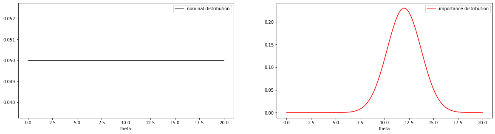
print('variance of monte carlo estimate:', mc_variance)
print('variance of IS monte carlo estimate:', is_mc_variance)
variance of monte carlo estimate: 2171.4928181500945
variance of IS monte carlo estimate: 815108574708675.2
print('average numnber of zero importance weight:', np.mean(importance_weights))
average numnber of zero importance weight: 0.394
7.6. Summary of Monte Carlo Integration#
Monte Carlo Integration#
In Chapter 6 we studied ways of sampling from an arbitrary distribution \(p(\theta)\):
Inverse CDF Sampling: when the inverse of the CDF of \(p\) can be computed
Rejection Sampling: when a good substitute distribution for \(p\) can be found
Gibbs Sampling: when the conditionals of a multivariate distribution are simple
Samples from \(p(\theta)\) can be used to estimate the expected value of any function of \(\theta\):
We call \(\widehat{I}\) the Monte Carlo estimate of \(I\). We proved that:
\(\widehat{I}\) is consistent and unbiased
The variance of \(\widehat{I}\) is \(\frac{\sigma_f}{S}\), where \(\sigma_f = \mathrm{Var}\left[f(\theta) \right]\)
What do these two properties of \(\widehat{I}\) tell us to do if we want better estimates of \(I\)?
Variance Reduction for Monte Carlo Integration#
We can reduce the variance of \(\widehat{I}\) by increasing the sample size \(S\). But this is not always practical. Why?
We studied three ways of reducing the variance of \(\widehat{I}\) by reducing the variance of the function inside the expectation:
Control Variates: find a function \(h\) that captures the trend of \(f\):
\[ \widehat{I}_{\text{control}} = \frac{1}{S}\sum^S_{s=1} f(\theta_s) - c(h(\theta_s) - \mu_h), \; \theta_s \sim p(\theta) \]Stratified Sampling: Split the domain \(\Theta\) into \(m\) pieces (strata):
\[ \widehat{I}_{\text{SS}} = \sum_{m=1}^M w_m \widehat{I}_m. \]where \(w_m = \int_{\Theta_m} p(\theta)d\theta\), and \(\widehat{I}_m\) is the MC estimate over the \(m\)-th strata
Importance Sampling: choose a \(q\) that places more weight where \(f(\theta)\) has high variance and \(p\) is more likely to produce samples:
\[ \widehat{I}_{\text{IS}} = \frac{1}{S}\sum_{s=1}^S \frac{p(\theta_s|Y)}{q(\theta_s)}f(\theta_s),\; \theta_s \sim q(\theta). \]
For each method: What are the design choices you need to make? Where is the variance reduction coming from? Why is it hard to achieve?
7.7. Application: Monte Carlo Estimation of Arbitrary Integrals#
Arbitrary Definite Integrals#
We formulated Monte Carlo estimation as a way to approximate the expected value of functions of random variables. However, given a function of deterministic variables, \(f(x)\), we can rewrite the integral
where \(x\in\mathbb{R}^D\) and \(\Omega \subseteq \mathbb{R}^D\), like an expectation
if we can factor \(f\) as \(f(x) = g(x)h(x)\).
The rewritten integral looks a lot like the expectation of \(g(X)\) where the pdf of \(X\) is \(h(X)\). The only problem is that \(h(x)\) is not necessarily a pdf!
Rewriting an Arbitrary Definite Integral as an Expectation#
We want to rewrite the following expression as an expectation:
Let \(V\) denote the integral of \(h\) over \(\Omega\):
Note that, then, \(\int_{\Omega} \frac{1}{V}h(x)dx = 1\). Hence, \(\frac{1}{V}h(x)\) is a valid pdf over \(\Omega\).
Then we can write:
We recognize the above integral as an expectation, and hence can estimated using Monte Carlo methods:
How Do You Factor the Integrand \(f\)?#
Once we factor \(f(x)\) as \(f(x) = g(x)h(x)\), then we can rewrite the integral of \(f\) (over \(\Omega\)) as an expectation
But how does one choose \(g\) and \(h\)? Two simple things to keep in mind:
since we need to sample from \(h\), we need to choose \(h\) such that it is easily approximated by distributions from which we know how to sample.
since the variance of the Monte Carlo estimator depends on \(g\), we should choose \(g\) to be relatively flat (so that the output of \(g\) has low variance).
7.8. Summary#
Why Are We Sampling Again? AKA Bayesian Model Evaluation
(Posterior Predictive Check: Obviously Needs Sampling) Use the models in the posterior to generate synthetic data, in order to compare with real data, i.e. sample from the posterior predictive.
(Marginal Data Log-Likelihood: Secretly Needs Sampling) Compute the marginal log-likelihood of the data (train or test) over the posterior:
\[\begin{aligned} \sum_{m=1}^M \log \int_\Theta p(\mathbf{y}^*_m | \theta) p(\theta| \text{Data}) d\theta \end{aligned}\]
Integration Requires Sampling! Monte Carlo Integration
Recognize your integral as an expectation:
\[\int_\Theta \underbrace{p(\mathbf{y}^*_m | \theta)}_{\text{$f(\theta)$}}\underbrace{p(\theta| \text{Data})}_{\text{pdf of $\theta$}} d\theta = \mathbb{E}_{\theta\sim p(\theta|\text{Data})}\left[ p(\mathbf{y}^*_m | \theta)\right]\]Approximate the expectation (theoretical mean) with sampling mean:
\[\underbrace{\mathbb{E}_{\theta\sim p(\theta|\text{Data})}\left[ p(\mathbf{y}^*_m | \theta)\right]}_{I} \approx \underbrace{\frac{1}{S}\sum_{s=1}^S p(\mathbf{y}^*_m | \theta_s),\, \theta_s \sim p(\theta | Y)}_{\widehat{I}}\]Why is this valid again? That is, what are the desirable properties of the estimator \(\widehat{I}\)?
Reduce the variance of estimator \(\widehat{I}\): What are the two factors contributing to the variance of \(\widehat{I}\)?
Control Variates:
Need to choose \(h(\theta)\) such that …?
Need to choose constant \(c\)
Then \( \widehat{I}_{\text{control}} = \frac{1}{S}\sum^S_{s=1} f(\theta_s) - c(h(\theta_s) - \mu_h) \)
How do I get the greatest variance reduction? Why is it hard to achieve?
Stratified Sampling:
Need to choose the strata, e.g. a way to break up the domain of \(\theta\), such that …?
Need to renormalize \(p\) so it’s a pdf over each stratum
\[ \frac{p(\theta)}{w_m},\quad w_m = \int_{\Theta_m} p(\theta)d\theta. \]Estimate the integral \(\mathbb{E}_{\theta \sim \frac{p(\theta)}{w_m}\mathbb{1}_{\Theta_m}}[f(\theta)]\) on each stratum estimated with \(S_m = w_m * S\) samples
Piece together the integral over the entire domain of \(\theta\)
\[ \widehat{I}_{\text{SS}} = \sum_{m=1}^M w_m \widehat{I}_m. \]
Importance Sampling:
Need to choose importance distribution \(q(\theta)\) such that …?
Sample from your importance distribution and then, instead of trashing samples unlikely under \(p\), we down-weight their importance in the Monte Carlo sum
\[\widehat{I}_{\text{IS}} = \frac{1}{S}\sum_{s=1}^S \underbrace{\frac{p(\theta_s|Y)}{q(\theta_s)}}_{\text{Importance Weight}}f(\theta_s), \; \theta_s \sim q(\theta_s)\]Why do we need importance sampling? Why is it hard to achieve variance reduction with importance sampling?
7.9. Exercises#
These problems were originally assigned as homework. Data files are in the book’s data/ folder. Worked solutions, where available, are collapsed beneath the questions they answer; try each problem before expanding them.
Problem Set: Sampling and Monte Carlo Integration#
Problem Description#
Let \(X\) be a random variable with distribution described by the following pdf:
Let \(h\) be the following function of the random variable \(X\):
Our goal is to compute the expected value of \(h(X)\):
where \(\Omega\) is the domain of \(f_X\).
Exercise: Part I. Implement Some Monte Carlo Estimates
Approximate \(\mathbb{E}_{X\sim f_X}[h(X)]\) using the Monte Carlo integration methods and your choice of a reasonable fixed \(S\) (for rejection sampling, this means run the algorithm \(S\) times):
Inverse CDF Sampling and naive Monte Carlo estimation.
Rejection Sampling and naive Monte Carlo estimation, using each of the following
a uniform proposal distribution
a normal proposal distribution
and your choice of reasonable parameters for the proposal distributions.
Importance Sampling using each of the following
a uniform importance distribution
a normal importance distribution
and your choice of reasonable parameters for the importance distributions.
Stratified Sampling using 4 strata, whose end points are given by
\[ [1, 3, 5, 7, 9]. \]Use inverse cdf sampling on each stratum.
Solution: Part I, Question 1
The piecewise definition of the pdf looks intimidating at first glance, so let’s visualize it.
### Import basic libraries
from functools import partial
import numpy as np
import scipy as sp
import scipy.stats
import pandas as pd
import sklearn as sk
from sklearn.linear_model import LinearRegression
import matplotlib.pyplot as plt
#definition of the pdf
def f_X(x):
if x >= 1 and x <= 3:
return 1./12 * (x - 1.)
elif x > 3 and x <= 5:
return -1./12 * (x - 5)
elif x > 5 and x <= 7:
return 1./6 * (x - 5)
elif x > 7 and x <= 9:
return -1./6 * (x - 9)
else:
return 0.
#vectorize f_X, so that it takes arrays and inputs!
f_X_vec = np.vectorize(f_X)
#visualize pdf
fig, ax = plt.subplots(1, 1, figsize=(10, 5))
x = np.linspace(0, 10, 200)
ax.plot(x, f_X_vec(x), color='gray', linewidth=3)
ax.set_xlabel('X')
ax.set_title('pdf f_X')
plt.show()

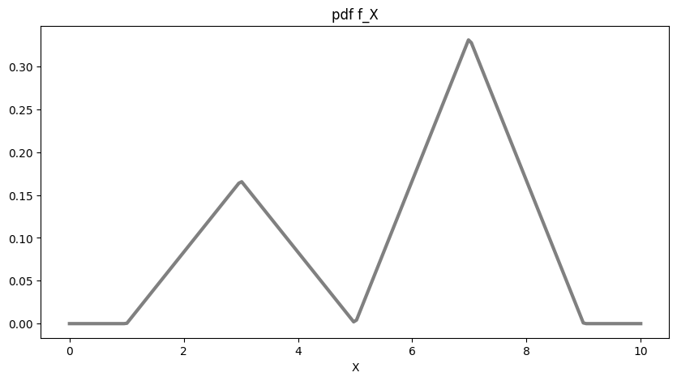
Recall that the CDF, \(F_X\), of our pdf \(f_X\) is defined as:
That is, \(F_X(a)\) is the area under \(f_X\) up to \(X=a\). Now, since our pdf is zero when \(X < 1\). We rewrite the above as
Since our function is defined piecewise, we can compute the CDF on each piece. We demonstrate this process for the third piece, \(5< x\leq 7\):
the pdf over \([5, 7]\) has the form \(\frac{1}{6}(x-5)\);
an antiderivative is \(\frac{1}{6}\left(\frac{1}{2}x^2-5x\right)\);
the CDF over \([5, 7]\) is the area under \(f_X\) from \(X=1\) to \(X=a\), \(a\in [5, 7]\);
Be careful: you cannot compute the CDF as follows (simply by using the Fundamental Theorem)
This is because the functional form of the antiderivative is different out side of the interval [5, 7]!
Instead, we break up the pdf as follows:
In the above, we note that the area \(\int_{1}^5 f_X(x)dx\) is the area of the small triangle, which is 1/3.
The shaded region below illustrates the value of \(F_X(a)\) for \(a\in [5, 7]\).
#the upper limit of the integral
a = 6.5
#visualize F_X(a)
fig, ax = plt.subplots(1, 1, figsize=(10, 5))
#visualize the pdf f_X
x = np.linspace(0, 10, 200)
ax.plot(x, f_X_vec(x), color='gray', linewidth=3, label='f_X')
#visualize the area under f_X up to x=a
x = np.linspace(1, a, 200)
ax.fill_between(x, f_X_vec(x), color='gold', alpha=0.5, label='F_X({})'.format(a))
ax.set_xlabel('X')
ax.set_title('pdf f_X')
ax.legend(loc='best')
plt.show()

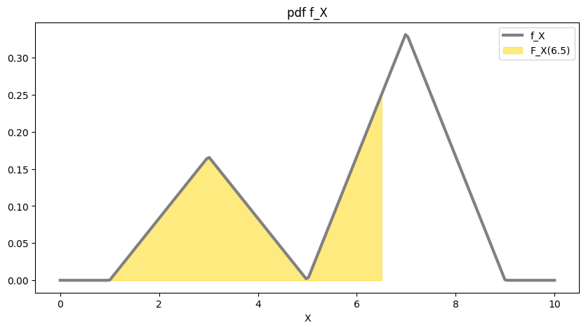
In a similar manner, we compute expressions for the CDF of \(X\) on all four pieces of the domain:
Each piece of \(F_X\) can now be inverted, with the help of WolframAlpha if you’d like:
We now have all the pieces we need to sample from \(f_X\) and we can proceed with inverse CDF sampling to compute
#inverse of the CDF
def F_inv_X(y):
if y >= 0 and y <= 1./6:
return 1 + 2 * np.sqrt(6 * y)
elif y > 1./6 and y <= 1./3:
return 5 - 2 * np.sqrt(2 * (1 - 3 * y))
elif y > 1./3 and y <= 2./3:
return 5 + 2 * np.sqrt(3 * y - 1)
elif y > 2./3 and y <= 1.:
return 9 - 2 * np.sqrt(3 * (1 - y))
else:
return np.nan
#vectorize the inverse CDF
F_inv_X_vec = np.vectorize(F_inv_X)
#function h
def h(x):
return 7 * np.exp((x - 4)**2 / -2) + 3 * np.exp((x-8)**2 / (-2 * 0.7**2))
#implementation of inverse transform sampling
def inverse_transform(h, F_inv_X, S):
#1. sample y-values uniformly from [0, 1]
y = np.random.uniform(0, 1, S)
#2. turn these y-values into x-values using the inverse CDF
x_samples = F_inv_X(y)
#3. apply h to the x-values and average
mean_inv = np.mean(h(x_samples))
return x_samples, mean_inv
#number of samples to draw
S = 500
#get the samples and the MC estimate
inverse_cdf_samples, mean_inv = inverse_transform(h, F_inv_X_vec, S)
print('Inverse Transform estimate of E[h(x)]: {}'.format(mean_inv))
Inverse Transform estimate of E[h(x)]: 2.543618958612694
Solution: Part I, Question 2
Setting up rejection sampling requires us to find a constant \(M\) such that \(f_X \leq M g\) where \(g\) is the proposal distribution. In general, we want \(M\) to be as small as possible. However, in this case we will simply pick a \(M\) based on visualizations.
#setting up our proposal distributions
#normal pdf: for sampling and evaluation
def normal_dist(mu, sigma, x=None, S=None):
if x is not None:
return sp.stats.norm.pdf(x, mu, sigma)
elif S is not None:
return np.random.normal(mu, sigma, S)
else:
return None
#uniform pdf: for sampling and evaluation
def uniform_dist(a, b, x=None, S=None):
if x is not None:
return np.array([1. / (b - a)] * len(x))
elif S is not None:
return np.random.uniform(a, b, S)
else:
return None
#define a normal proposal distribution
prop_1 = partial(normal_dist, mu=5.3, sigma=1.6)
#choose an M_1 so that f_X <= M_1 * prop_1
M_1 = 4
#define a uniform proposal distribution
prop_2 = partial(uniform_dist, a=1, b=9)
#choose an M_2 so that f_X <= M_2 * prop_2
M_2 = 3
#visualize M_1 * prop_1, M_2 * prop_1 to make sure they dominate f_X
fig, (ax1, ax2) = plt.subplots(1, 2, figsize=(20, 5))
x = np.linspace(0, 10, 200)
#visualize M_1 * prop_1
ax1.plot(x, f_X_vec(x), color='gray', linewidth=3, label='f_X')
ax1.plot(x, M_1 * prop_1(x=x), '--', color='salmon', linewidth=2, label='proposal distr, M={}'.format(M_1))
ax1.set_xlabel('X')
ax1.set_title('normal pdf as proposal')
ax1.legend(loc='best')
#visualize M_2 * prop_2
ax2.plot(x, f_X_vec(x), color='gray', linewidth=3, label='f_X')
ax2.plot(x, M_2 * prop_2(x=x), '--', color='blue', linewidth=2, label='proposal distr, M={}'.format(M_2))
ax2.set_xlabel('X')
ax2.set_title('uniform pdf as proposal')
ax2.legend(loc='best')
plt.show()

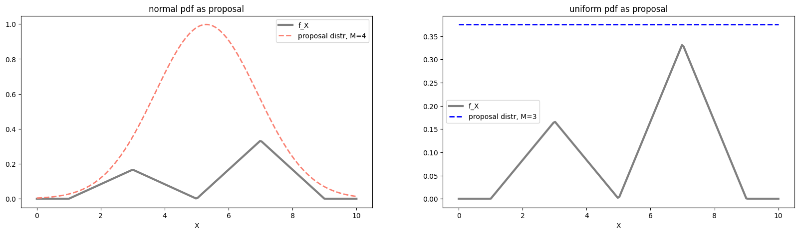
Now that we have our constants and proposal distributions, we can proceed with rejection sampling to compute
##implementation of rejection sampling
def rejection(S, prop_dist, M, true_dist, h):
#get samples from the proposal distribution
samples = prop_dist(S=S)
#get the likelihood ratio of sample under target distribution and proposal distribution
ratio = true_dist(samples) / (M * prop_dist(x=samples))
#get uniform random samples between 0 and 1
U = np.random.uniform(0, 1, size=S)
#accept samples if U is less than or equal to likelihood ratio
accepted_sampes = samples[U <= ratio]
#average h over the accepted samples only
mean_rej = np.mean(h(accepted_sampes))
return accepted_sampes, mean_rej, samples
#get the samples and the MC estimate
rej_norm_samples, mean_rej_norm, samples = rejection(S, prop_1, M_1, f_X_vec, h)
print('Rejection Sampling estimate of E[h(x)] (using normal proposal): {}'.format(mean_rej_norm))
Rejection Sampling estimate of E[h(x)] (using normal proposal): 2.3396045401464813
rej_uni_samples, mean_rej_uni,samples = rejection(S, prop_2, M_2, f_X_vec, h)
print('Rejection Sampling estimate of E[h(x)] (using uniform): {}'.format(mean_rej_uni))
Rejection Sampling estimate of E[h(x)] (using uniform): 2.2277466021996766
Solution: Part I, Question 3
Recall that the importance sampling estimator of \(I\) is defined as
where \(w_s = \frac{f_X(x_s)}{q(x_s)}\) is the importance weight of the \(s\)-th sample.
#implement importance sampling
def importance(S, prop_dist, nom_distribution, h):
#sample from the proposal distribution
samples = prop_dist(S=S)
#compute the weights for the samples
weights = np.multiply(nom_distribution(samples), prop_dist(x=samples)**-1.)
#multiply weights to h(x_s) and average over samples
mean_imp = np.mean(np.multiply(h(samples), weights))
return weights, mean_imp
weights_imp_norm, mean_imp_norm = importance(S, prop_1, f_X_vec, h)
print('Importance Sampling estimate of E[h(x)] (using normal): {}'.format(mean_imp_norm))
weights_imp_uni, mean_imp_uni = importance(S, prop_2, f_X_vec, h)
print('Importance Sampling estimate of E[h(x)] (using uniform): {}'.format(mean_imp_uni))
Importance Sampling estimate of E[h(x)] (using normal): 2.5267365305647753
Importance Sampling estimate of E[h(x)] (using uniform): 2.4454662654776858
Solution: Part I, Question 4
Since the graph of \(f_X\) is a set of two triangular peaks. The area under the smaller triangle is \(\frac{1}{3}\) and the area under the larger is \(\frac{2}{3}\) (this is just algebra - no calculus required).
Therefore the following integrals can be evaluated geometrically
Thus, we can decompose the integral \(I\) as:
where \(f_i\) is \(f_X\) renormalized to be a pdf on the \(i\)-th strata:
We will approximate each integral in the above decomposition separately using inverse CDF sampling. From each strata, we will draw a number of points for each stratum that is proportional to the probability of a sampling landing in that stratum. In this case this it means choosing \(S_i = 1./6 * S\) or \(S_i = 1./3 * S\).
Inverting the CDF of each \(f_i\) gives:
Now we are set to reuse our implementation of inverse CDF sampling and MC estimation to perform stratified sampling.
#define the four inverse CDF's
F_inv_1 = lambda y: 1 + 2 * np.sqrt(y)
F_inv_2 = lambda y: 5 - 2 * np.sqrt(1 - y)
F_inv_3 = lambda y: 5 + 2 * np.sqrt(y)
F_inv_4 = lambda y: 9 - 2 * np.sqrt(1 - y)
#implement stratified sampling
def stratified_sampling(h, S):
#list of inverse CDF's
F = [F_inv_1, F_inv_2, F_inv_3, F_inv_4]
#list of weights for each stratum
weights = [1./6, 1./6, 1./3, 1./3]
mean = 0
samples = []
#estimate on each stratum then sum
for F_inv_i, w in zip(F, weights):
#get the right number of points for each stratum
S_stratum = int(w * S)
#get samples from the stratum and compute the MC estimate
samples_i, mean_i = inverse_transform(h, F_inv_i, S_stratum)
#add the estimates across strata in a weighted way
mean += w * mean_i
samples += list(samples_i)
return np.array(samples), mean
weights_strat, mean_strat = stratified_sampling(h, S)
print('Stratified estimate of E[h(x)]: {}'.format(mean_strat))
Stratified estimate of E[h(x)]: 2.4832724919254208
Exercise: Part II. Debug Your Samplers
Visualize the pdf \(f_X\) as well as samples obtained from Inverse CDF Sampling and Rejection Sampling (for both proposal distributions). It’s probably better to make separate plots for each set of samples.
What does the comparison say about the quality of your samples? In particular, which sampler (and which proposal distribution) produces “better” samples? Is this surprising – i.e. use some properties of these samplers discussed in Chapter 6 and this chapter to explain the patterns you’re observing?
Hint: you might find it helpful to visualize the proposal distributions along with \(f_X\) in your analysis of rejection sampling.
Visualize the distribution of the importance weights (one for each importance distribution).
Is the weight distribution surprising – i.e. use some properties of these samplers discussed in Chapter 6 and this chapter to explain the patterns you’re observing?
What do these importance weights tell you about the quality of your importance sampling estimate?
Hint: you might find it helpful to visualize the importance distributions along with \(f_X\) and \(h\) in your analysis of importance sampling.
Visualize the distribution of all the samples across strata. Is the distribution what you expect – i.e. use some properties of these samplers discussed in Chapter 6 and this chapter to explain the patterns you’re observing?
Solution: Part II, Question 1
Let’s first visualize the samples from the inverse CDF sampler.
#Sanity check: make sure samples from inverse CDF look like they
#are from the correct distribution
fig, ax = plt.subplots(1, 1, figsize=(10, 5))
x = np.linspace(0, 10, 200)
ax.plot(x, f_X_vec(x), color='gray', linewidth=3)
ax.hist(inverse_cdf_samples, bins=50, density=True, color='lightgray', linewidth=0)
ax.set_xlabel('X')
ax.set_title('Inverse Transform Sampling Sanity Check')
plt.show()

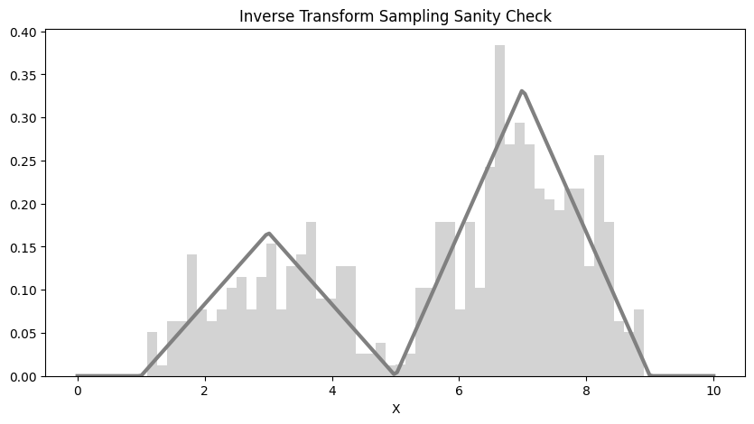
It looks like that the histogram of the 500 samples align well with the pdf \(f_X\). It looks like that the big hump of the pdf is well approximated by our samples, where as the small hump is less so. This indicates that we might wish to increase the sample size \(S\) to get a more representative sampling. Recall that it’s important for our samples to cover the support of the pdf, since if our samples have “gaps” in their coverages, those \(x\) values are never accounted for in our MC estimate leading potentially both to higher variance and higher errors!
Next, we plot the samples from rejection sampling.
#Sanity check: make sure samples from rejection sampling look like they
#are from the correct distribution
fig, ax = plt.subplots(1, 2, figsize=(20, 5))
x = np.linspace(0, 10, 200)
ax[0].plot(x, f_X_vec(x), color='gray', linewidth=3)
ax[0].hist(rej_norm_samples, bins=50, density=True, color='salmon', alpha=0.8, linewidth=0)
ax[0].set_xlabel('X')
ax[0].set_title('Rejection Sampling Sanity Check (using normal proposal)')
ax[1].plot(x, f_X_vec(x), color='gray', linewidth=3)
ax[1].hist(rej_uni_samples, bins=50, density=True, color='blue', linewidth=0, alpha=0.4)
ax[1].set_xlabel('X')
ax[1].set_title('Rejection Sampling Sanity Check (using uniform proposal)')
plt.show()

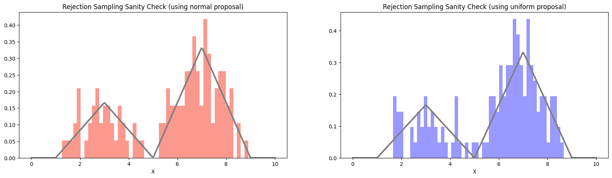
Recall that the efficiency of the rejection sampler depends on the constant \(M\) that bounds the ratio \(f_X/g\) – in particular, the sampler will typically accept \(1/M\) of the total number of samples.
Since \(M=4\) for the normal proposal distribution and \(M=3\) for the uniform proposal distribution, we’d expect the first sampler to accept \(500/4 = 125\) samples and the second to accept \(500/3 \approx 166\) samples. Let’s check that the number of accepted samples in our simulation matches what we expect.
print('number of samples accepted using normal proposal:', len(rej_norm_samples))
print('number of samples accepted using uniform proposal:', len(rej_uni_samples))
number of samples accepted using normal proposal: 125
number of samples accepted using uniform proposal: 147
Indeed, we find that the sampler using the normal proposal distribution accepts less samples. We know that fewer samples lead to more variance in our MC estimation and any given estimation can have a larger error.
This indicates that we might prefer to use the MC estimate coming from the uniform proposal distribution
In fact, since the inverse CDF is able to produce more samples from \(f_X\) (no sample is rejected), the estimate from inverse CDF sampling should have the least variance and smaller error for any given error, compared with the estimates produced by both rejection samplers.
Solution: Part II, Question 2
To sanity check the importance sampling MC estimate, we first visualize the importance weights.
#Sanity check: make sure importance weights from importance sampling with look relatively homogeneous
fig, ax = plt.subplots(1, 2, figsize=(20, 5))
x = np.linspace(0, 10, 200)
ax[0].hist(weights_imp_norm, bins=50, density=True, color='purple', alpha=0.6, linewidth=0)
ax[0].set_ylabel('relative frequency')
ax[0].set_xlabel('importance weight')
ax[0].set_title('Importance Weights Sanity Check (using normal distribution)')
ax[1].hist(weights_imp_uni, bins=50, density=True, color='green', linewidth=0, alpha=0.4)
ax[1].set_ylabel('relative frequency')
ax[1].set_xlabel('importance weight')
ax[1].set_title('Importance Weights Sanity Check (using uniform distribution)')
plt.show()

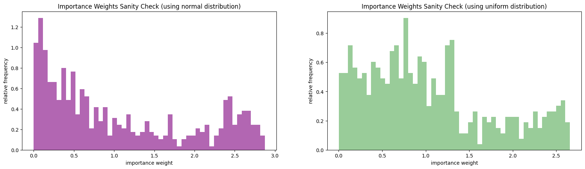
It looks like the weights for the normal importance distribution is more heterogeneous than those for the uniform importance distribution. In fact, a significant portion of the weights for the normal importance distribution are close to zero! This makes sense since the normal pdf is non-zero everywhere, so we are often proposing \(x\) values smaller than 1 or larger than 9 – these values will have zero likelihood under \(f_X\). Also most of the mass of the normal importance distribution is around values of \(x\) that are highly unlikely under \(f_X\), this means, again that we will frequently be sampling \(x\) values whose importance weight will be small (since \(f_X\) will be small).
In comparison, the weights for the uniform importance distribution are mostly close to 1 or moderately larger than 1. So in some sense, most of the samples we obtain will “count” towards our estimate and count roughly equally. This again is reasonable since the uniform distribution is less dissimilar to \(f_X\) and hence it will tend less to propose points that are extremely unlikely under \(f_X\).
We can also visualize the comparison of the importance distributions and the product \(f_X*h\). Recall that we can hope for a variance reduction when the importance distribution is proportional to \(f_X*h\).
#visualize the importance distributions along with f_X*h
fig, ax = plt.subplots(1, 2, figsize=(20, 5))
x = np.linspace(0, 10, 200)
ax[0].plot(x, f_X_vec(x) * h(x), color='gray', linewidth=3, label='f_X * h')
ax[0].plot(x, prop_2(x=x), '--', color='blue', linewidth=2, label='proposal distr, uniform')
ax[0].set_xlabel('X')
ax[0].set_title('uniform pdf as importance distribution')
ax[0].legend(loc='best')
ax[1].plot(x, f_X_vec(x) * h(x), color='gray', linewidth=3, label='f_X * h')
ax[1].plot(x, prop_1(x=x), '--', color='salmon', linewidth=2, label='proposal distr, mu={}, sigma={}'.format(5.3, 1.6))
ax[1].set_xlabel('X')
ax[1].set_title('normal pdf as importance distribution')
ax[1].legend(loc='best')
plt.show()

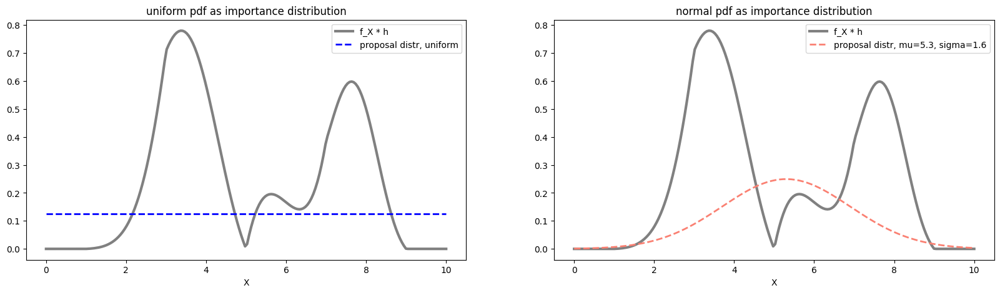
From the above visualization, we see that neither importance distribution is proportional to \(f_X*h\), it’s hard to determine by just visual examination which is “worse”.
However, since the importance weights of the normal importance distribution is visibly more heterogeneous than those of the uniform importance distribution. We may still expect that the variance of MC estimate using the uniform importance distribution will be smaller.
Solution: Part II, Question 3
We visualize the samples from across the strata to check that they are coming from the correct distribution.
#Sanity check: make sure samples from stratified sampling look like they
#are from the correct distribution
fig, ax = plt.subplots(1, 1, figsize=(10, 5))
x = np.linspace(0, 10, 200)
ax.plot(x, f_X_vec(x), color='gray', linewidth=3)
ax.hist(weights_strat, bins=50, density=True, color='cyan', alpha=0.5, linewidth=0)
ax.axvline(x=1, linestyle='--', color='red')
ax.axvline(x=3, linestyle='--', color='red')
ax.axvline(x=5, linestyle='--', color='red')
ax.axvline(x=7, linestyle='--', color='red')
ax.axvline(x=9, linestyle='--', color='red')
ax.set_xlabel('X')
ax.set_title('Stratified Sampling Sanity Check')
plt.show()

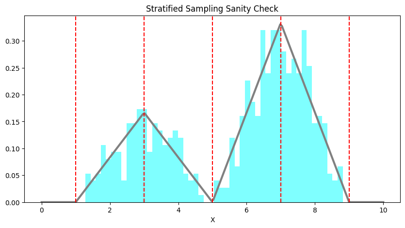
Recall that stratified sampling works well when the function is relatively “flat” over each strata, we can visualize \(h\) over the strata and check if this is the case!
fig, ax = plt.subplots(1, 1, figsize=(10, 5))
x = np.linspace(0, 10, 200)
ax.plot(x, h(x), color='gray', linewidth=3)
ax.axvline(x=1, linestyle='--', color='red')
ax.axvline(x=3, linestyle='--', color='red')
ax.axvline(x=5, linestyle='--', color='red')
ax.axvline(x=7, linestyle='--', color='red')
ax.axvline(x=9, linestyle='--', color='red')
ax.set_xlabel('X')
ax.set_title('h over the strata')
plt.show()

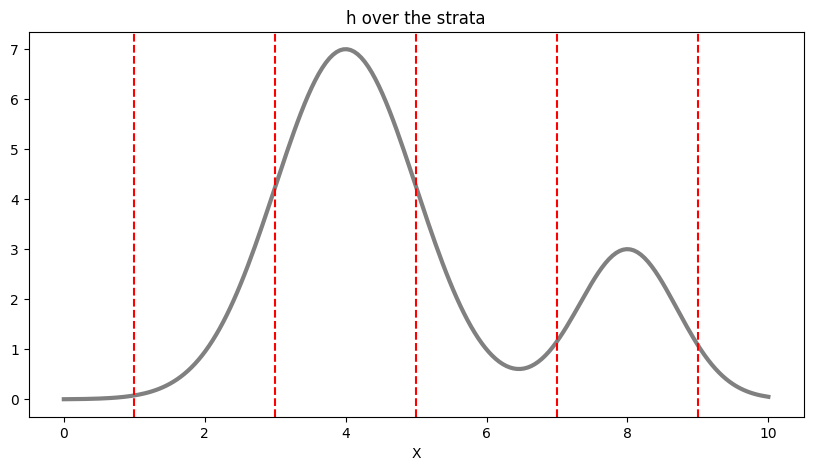
We see that the convenient way in which we carved up the domain of \(X\) into strata is not necessarily appropriate for \(h\).
Exercise: Part III: Variance Reduction
Compute the sample variance of the four Monte Carlo estimates in Part I. Based on the discussion in this chapter, which sampling methods (and proposal/importance distributions) is expected, in principle, to resulted in lower variances? How well do your results align with these expectations?
Based on your experiments, would you feel comfortable concluding which type of Monte Carlo estimate will generally have the lowest variance? Why or why not?
Solution: Part III, Question 1
Variance of these MC estimates can be estimated from sample variance. That is, we repeat the estimation \(N\) times, each time using \(S\) samples. Then we compute the variance of these estimates across the \(N\) trials.
#total number of simulations
n_simulations = 5000
#simulate each estimate repeatedly
var_inv = np.var([inverse_transform(h, F_inv_X_vec, S)[1] for i in range(n_simulations)])
var_imp_1 = np.var([importance(S, prop_1, f_X_vec, h)[1] for i in range(n_simulations)])
var_imp_2 = np.var([importance(S, prop_2, f_X_vec, h)[1] for i in range(n_simulations)])
var_rej_1 = np.var([rejection(S, prop_1, M_1, f_X_vec, h)[1] for i in range(n_simulations)])
var_rej_2 = np.var([rejection(S, prop_2, M_2, f_X_vec, h)[1] for i in range(n_simulations)])
var_strat = np.var([stratified_sampling(h, S)[1] for i in range(n_simulations)])
print('variance of inverse cdf: {}'.format(var_inv))
print('variance of rejection with normal: {}'.format(var_rej_1))
print('variance of rejection with uniform: {}'.format(var_rej_2))
print('variance of importance with normal: {}'.format(var_imp_1))
print('variance of importance with uniform: {}'.format(var_imp_2))
print('variance of stratified sampling: {}'.format(var_strat))
variance of inverse cdf: 0.006795495738697655
variance of rejection with normal: 0.02687357882120318
variance of rejection with uniform: 0.02043573708976313
variance of importance with normal: 0.011503050090124714
variance of importance with uniform: 0.007590987264605916
variance of stratified sampling: 0.0012275204882845991
We see that the MC estimate with inverse CDF sampling has lower variance than both estimates using rejection sampling. This is something we already anticipated since we get \(S\) samples from \(f_X\) using inverse CDF sampling, but we get less than \(S\) samples when we use rejection sampling (since many samples will be rejected). The variance for rejection sampling with normal proposal distribution is also higher than that with uniform proposal distribution. This is also anticipated, since the normal proposal distribution yields a smaller number of samples from \(f_X\) than the uniform proposal distribution.
The variances of importance sampling MC estimates are both higher than that of MC with inverse CDF sampling. Theoretically speaking, we use importance sampling as a means of variance reduction. However, reduction is attained only with the appropriate choice of importance distribution that yields reasonable importance weights! From the diagnostics we ran in Part II, we already anticipated that the variance of the importance sampling MC estimates will be high since both importance distributions are unideal for \(f_X\) and \(h\). We expected that the estimate with the normal importance distribution will have a high variance since the corresponding importance weights were very heterogeneous – this is exactly what we see.
Not covered here: a discussion of the stratified estimate’s variance, which is the lowest of the six above.
Solution: Part III, Question 2
From our experiment it’s not reasonable to make many definitive generalizations. For example, we can’t say that importance sampling is unable to produce variance reduction – we haven’t tried very hard to find an appropriate importance distribution. What this exercise demonstrates is that the design choices we make in these algorithm can have a significant impact on performance and that practically no algorithm works “out-of-the-box”. When our choices are ill-considered the actual performance can be orders of magnitude different from the theoretically predicted optimal!
7.10. Further Reading#
Monte Carlo Integration
(Introductory) Monte Carlo Integration
(Advanced) Safe and Effective Importance Sampling